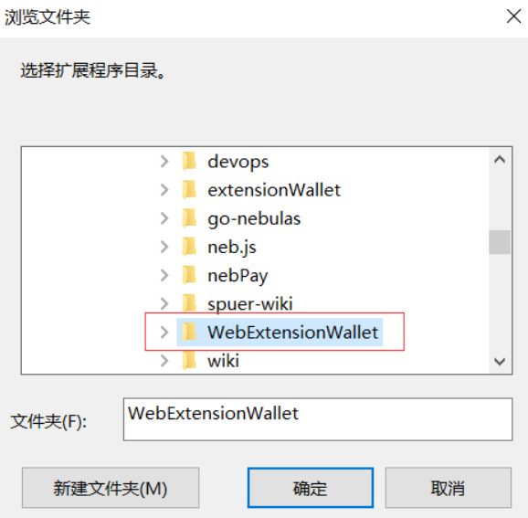
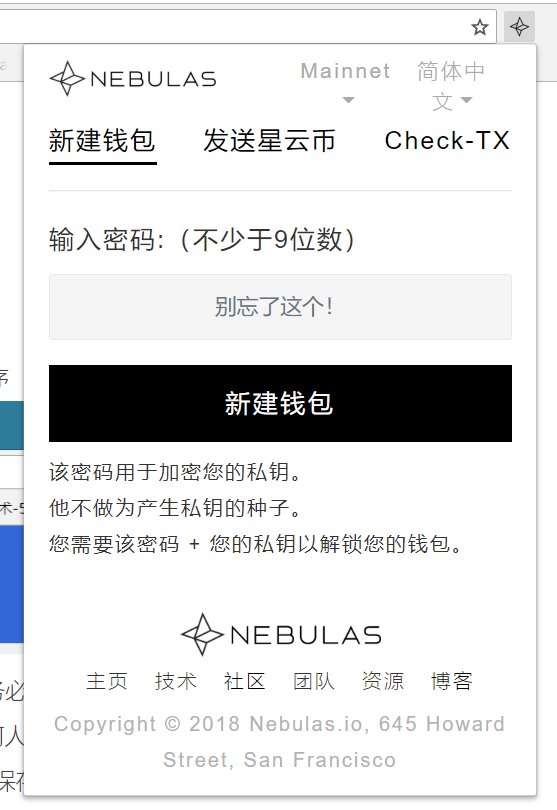

帮助
1. 安装使用钱包
首先下载插件
→点我下载
下载完成后，解压成文件夹。 在Chrome 浏览器中打开扩展程序

选择解压到文件夹。

安装完成后会显示插件图标。

打开插件点击新建钱包，设置密码(密码至少是9位数) ，点击创建新钱包。
特别提醒: 请务必保证秘钥文件的安全，不要忘记密码（私钥是您数字资产的凭证，请不要告诉任何人，如不慎暴露或丢失，会面临丢失对应数字资产的风险，请谨慎保管）。
点击下载密码库文件，保存到电脑上，这里包含了这个钱包内的私钥信息，因此请妥善保管，避免遗失或被盗。
注意：密码库文件可以用于断开网络，进行离线交易，这个钱包内的秘钥信息都包含在内，请妥善保管，如不慎丢失，会面临丢失对应数字资产的风险。
完成后，你就已经成功建立了一个NAS钱包！